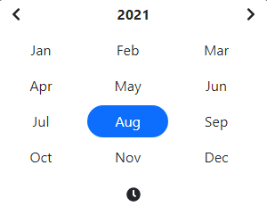
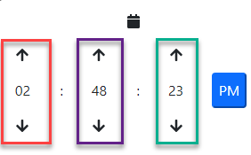
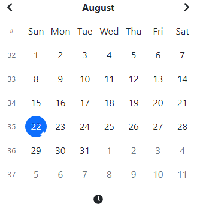

Options
Options can be provided during the inital setup through the constructor new
tempusDominus.TempusDominus(...,
options);. Take a look at the examples for more information.
Options can be updated through the updateOptions
function.
All options will throw typeMismatch if the provided type does not match the expected type, e.g. a string instead of a boolean.
minDate
Accepts: string | Date | DateTime Defaults: undefined
Prevents the user from selecting a date/time before this value. Set to
undefined to remove
the
restriction.
Throws conflictingConfiguration if value is after maxDate.
maxDate
Accepts: string | Date | DateTime Defaults: undefined
Prevents the user from selecting a date/time after this value. Set to undefined
to remove the
restriction.
Throws conflictingConfiguration if value is after maxDate.
enabledDates/disabledDates
enabledDates
Allows the user to select only from the provided days. Setting this takes precedence over options.minDate, options.maxDate configuration.
disabledDates
Disallows the user to select any of the provided days. Setting this takes precedence over options.minDate, options.maxDate configuration.
enabledHours/disabledHours
Throws numbersOutOfRage any value is not between 0-23
enabledHours
Allows the user to select only from the provided hours.
disabledHours
Disallows the user to select any of the provided hours.
disabledTimeIntervals
Accepts: array of an object with from: DateTime, to: DateTime
Defaults:
undefined
Disables time selection between the given DateTimes.
const later = new tempusDominus.DateTime();
later.hours = 8;
new tempusDominus.TempusDominus(..., {
restrictions: {
disabledTimeIntervals: [ { from: new tempusDominus.DateTime().startOf('date'), to: later}]
}
});
daysOfWeekDisabled
Accepts: array of numbers from 0-6
Disallow the user to select weekdays that exist in this array. This has lower priority over the
options.minDate, options.maxDate, options.disabledDates and options.enabledDates configuration
settings.
Throws numbersOutOfRage any value is not between 0-6.
display
toolbarPlacement
Accepts: 'top' | 'bottom' Defaults: bottom
Changes the placement of the toolbar where the today, clear, component switch icon are located.
Throws unexpectedOptionValue if value is not one of the accepted values.
components
Accepts: true|false
These options turns on or off the particular views. If option is false for date the
user would
only be able to select month and year
for instance.
calendar
Defaults: true
A convenience flag that can enable or disable all of the calendar components like date,
month, year,
decades, century.
This flag must be true for any of the calendar components to be visible, even if those
options are true.
date
Defaults: true

month
Defaults: true

Turns on or off the month selection view.
year
Defaults: true

decades
Defaults: true

clock

Defaults: true
A convenience flag that can enable or disable all the calendar components like date,
month, year,
decades, century.
This flag must be true for any of the calendar components to be visible, even if those
options are true.
hours
Defaults: true
Displayed above in red
minutes
Defaults: true
Displayed above in purple
seconds
Defaults: false
Displayed above in green
useTwentyfourHour
Defaults: false

buttons
Accepts: true|false

calendarWeeks
Accepts: true|false Defaults: false

Displays an additional column with the calendar week for that week.
icons
Accepts: string
Any icon library that expects icons to be used like
<i class='fas fa-calendar'></i> will work, provided you include the
correct
styles and scripts needed.
Icon sprites are also supported.
type
Accepts either "icons" or "sprites"
Defaults to "icons". If "sprites" is used as the value, the icons will be render with an svg
element
instead
of an "i" element. If you don't know which you should use, leave it as "icons".
time
Defaults: (fas
fa-clock)
This icon is used to change the view from the calendar view to the clock view.
date
Defaults: (fas
fa-calendar)
This icon is used to change the view from the clock view to the calendar view.
up
Defaults: (fas
fa-arrow-up)
This icon is used to incremeant hours, minutes and seconds in the clock view.
down
Defaults: (fas
fa-arrow-down)
This icon is used to decremeant hours, minutes and seconds in the clock view.
next
Defaults: (fas
fa-chevron-right)
This icon is used to navigation forward in the calendar, month, year, and decade views.
previous
Defaults: (fas
fa-chevron-left)
This icon is used to navigation backwards in the calendar, month, year, and decade views.
today
Defaults:
(fas fa-calendar-check)
This icon is used to change the date and view to now.
clear
Defaults: (fas
fa-trash)
This icon is used to clear the currently selected date.
close
Defaults: (fas
fa-times)
This icon is used to close the picker.
viewMode
Accepts: 'clock' | 'calendar' | 'months' | 'years' | 'decades'
Defaults:
calendar
The default view when the picker is displayed. Set to "years" for a date of birth picker.
sideBySide
Accepts: true|false Defaults: false
 Displays the date and time pickers side by side.
Displays the date and time pickers side by side.
inline
Accepts: Defaults:boolean
Displays the picker in a inline div instead of a popup.
keepOpen
Accepts: true|false Defaults: false
Keep the picker window open even after a date selection. The picker can still be closed by the
target or
clicking on on an outside element. This option will only work when time components are disabled.
stepping
Accepts number Defaults: 1
Controls how much the minutes are changed by. This also changes the minute selection grid to step by this
amount.
useCurrent
Accepts true|false Defaults: true
Determines if the current date/time should be used as the default value when the picker is opened.
defaultDate
Accepts: string | Date | DateTime Defaults: undefined
Sets the picker default date/time. Overrides useCurrent
localization
Accepts: string Most of the localization options are for title tooltips over icons.
You can provide localization options to override the tooltips as well as the day/month display.
You could also set this globally via tempusDominus.DefaultOptions.localization = { ...
} or by
creating a variable e.g. const ru = { today:'Перейти сегодня' ... }; then provide
the options
as
new tempusDominus.TempusDominus(document.getElementById('datetimepicker1'), {
localization: ru
}
today
Defaults: Go to today
clear
Defaults: Clear selection
close
Defaults: Close the picker
selectMonth
Defaults: Select Month
previousMonth
Defaults: Previous Month
nextMonth
Defaults: Next Month
selectYear
Defaults: Select Year
previousYear
Defaults: Previous Year
nextYear
Defaults: Next Year
selectDecade
Defaults: Select Decade
previousDecade
Defaults: Previous Decade
nextDecade
Defaults: Next Decade
previousCentury
Defaults: Previous Century
nextCentury
Defaults: Next Century
pickHour
Defaults: Pick Hour
incrementHour
Defaults: Increment Hour
decrementHour
Defaults: Decrement Hour
pickMinute
Defaults: Pick Minute
incrementMinute
Defaults: Increment Minute
decrementMinute
Defaults: Decrement Minute
pickSecond
Defaults: Pick Second
incrementSecond
Defaults: Increment Second
decrementSecond
Defaults: Decrement Second
togglePeriod
Defaults: Toggle Period
selectTime
Defaults: Select Time
selectDate
Defaults: Select Date
dayViewHeaderFormat
Accepts: DateTimeFormatOptions Defaults:
{ month: 'long', year: '2-digit' }
This should be an appropriate value from the Intl.DateFormat options.
locale
Defaults: default
This should be a BCP 47 language tag or a value supported by Intl.
startOfTheWeek
Accepts: 0-6 Defaults: 0
Changes the start of the week to the provided index. Intl/Date does not provide apis to get the
locale's
start of the week. 0 = Sunday, 6 = Saturday. If you want the calendar view to start on Monday,
set this
option to 1.
keepInvalid
Accepts true|false Defaults: false
Allows for the user to select a date that is invalid coording to the rules. For instance, if a user enters a
date
pasted the maxDate.
debug
Accepts true|false Defaults: false
Similar to display.keepOpen, if true the picker won't close during any event where that would
normally
occur. This is useful when trying to debug rules or css changes. Note you can also use window.debug =
true in the dev tools console. Using the window object is useful for debugging deployed code without
requiring a configuration change.
allowInputToggle
Accepts true|false Defaults: false
If true, the picker will show on textbox focus.
viewDate
Accepts: string | Date | DateTime Defaults: now
Set the view date of the picer. Setting this will not change the selected date(s).
multipleDates
Accepts true|false Defaults: false
Allows multiple dates to be selected.
multipleDatesSeparator
Accepts: string Defaults: ;
When multipleDates is enabled, this value wil be used to separate the selected dates. E.g. 08/29/2021,
12:00 AM; 08/30/2021, 12:00 AM; 08/23/2021, 12:00 AM
promptTimeOnDateChange
Accepts true|false Defaults: false
If enabled and any of the time components are enabled, when a user selects a date the picker will automatically
display the clock view after promptTimeOnDateChangeTransitionDelay.
promptTimeOnDateChangeTransitionDelay
Accepts number Defaults: 200
Used with promptTimeOnDateChange. The number of milliseconds before the picker will display the
clock
view.
meta
Accepts object Defaults: {}
This property is to provide developers a place to store extra information about the picker. You can use this to
store database format strings for instance. There are no rules on what you add to this object and the picker
will not reference it.
container
Accepts HTMLElement Defaults: undefined
Change the target container to use for the widget instead of body (In case of application using
shadow DOM for example).